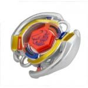

Bull 125SF
| Bull125SF (Semi-Flat) | |
|  | |
| Number: | BB-02 |
|---|---|
| System: | Metal System |
| Type: | Balance |
Bull is one of the first four Metal Fight Beyblades released, and it is part of the Horoscope Series along with Pegasis, Leone, and Sagittario.
Contents
Face: Bull
The face on this Beyblade depicts a Bull, which is represented by Taurus in the Zodiac.
Wheel: Bull
- Weight: 36 Grams
The Bull Wheel consists of two long, sloped wings adjacent to each other, both ending in a point. Along with this, there are two half-circles on a slight incline in the space between the slopes, emulating the nose rings sometimes worn by bulls. Bull was originally considered to be one of the most offensive MFB Wheels, but was subsequently outclassed with the release of Quetzalcoatl. The design of Bull is similar to that of Quetzalcoatl. Despite this similarity, there is one key difference: the Smash Attack points. Both are visibly different (as shown on the right); this is the major factor contributing to the vast difference in their performance. Quetzalcoatl, but more so Bull, appear to have impressive Upper Attack slopes, but in reality; as with most MFB Wheels, they do not exhibit Upper Attack in battle.
Use in Smash Attack Customization
Bull is severely outclassed by numerous other Wheels. Most of the little success it has had has been on mid-height Tracks: Bull T125RF is one such custom.
Track: 125
- Weight: 1 Gram
The 125 Track is a midway between the 105 and the 145 Tracks. Utilized in mid-height stamina combos, it is more difficult to destablize compared to 145 height stamina combos. It has declined in popularity as the choice mid-height track due to the release of gimmicked tracks of the same height, such as T125 and D125.
Bottom: Semi-Flat
| Weight: | 0.6 gram | Full Width: | 15.48 mm | Tip Width: | 4.12 mm | Flat Tip Width: | 1.94 mm | Full Height: | 8.96 mm | Tip Height: | 6.54 mm |
SF is is a sharp tip with a flattened end. As a result, SF displays a combination of Attack qualities and Stamina qualities, moving in a semi-aggressive pattern. Because of this however, the two attributes are compromised, culminating in an average performance in both categories. It produces a movement pattern that, while it is aggressive, is much slower than any Flat Bottom. The increased friction with the stadium floor due to the wider tip both increases its Defense and Stamina in comparison to a bottom similar to S or ES. However, it is in absolutely no competition with bottoms similar to WD for Stamina or RS for Defense. Semi-Flat is meant to be used in Balance type Beyblades, and as mentioned, exhibits aspects of several types, however it excels in none and thus is essentially useless.
SF's only mildly effective use is in Destabilizer customs where the low Track used along with the balance of qualities allows the custom to destabilize the opposing Beyblade.
Unless used in a destabalizer combination, SF is highly outclassed.
Other Versions
- Bull 145S - BB-06 Booster Bull 145S (Red)
- Bull 105S - Random Booster Vol.1 Secret Aries (Black)
- Bull 105D - Random Booster Vol.1 Secret Aries (Light Blue)
- Bull DF145HF Random Booster Vol.2 Legend Pisces (Orange)
- A recoloured Bull Wheel is included with the Pegasis DX Set. It features blue paint in place of the gold.
Gallery
-
Bull125SF
-
Bull125SF side view
-
Face
-
Wheel
-
Track
-
Semi-Flat Bottom
-
Tool
-
Stickers
-
Front of packaging
-
Back of packaging
Overall
The Bull Wheel was only briefly one of the top offensive choices for Wheels after Metal Fight Beyblade was released, and has since been outclassed severely. 125 Track variants in T125 and D125 have filled in the mid-height niche with additional gimmicks. SF is mediocre since it is outclassed by rubber Bottoms in Attack, and it is easily outspun by Stamina-based combos. There is absolutely no competitive reason to purchase this Beyblade.